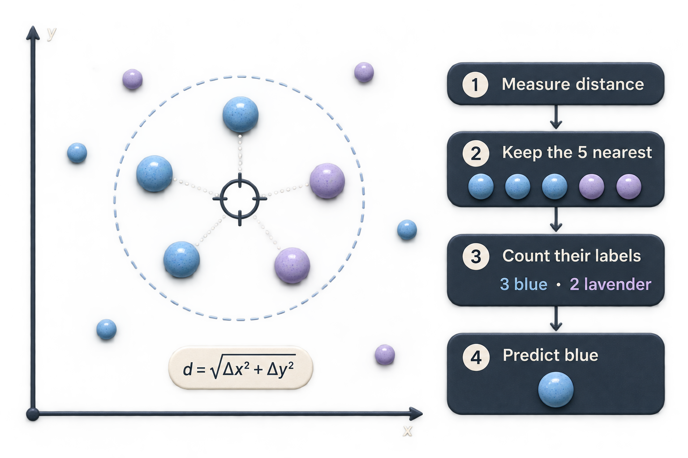
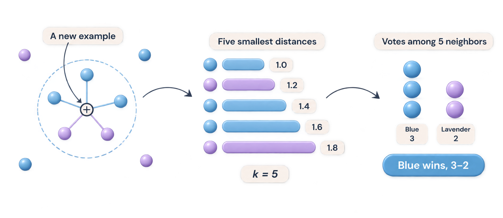

Option B is selected and available in the live k-NN example under “How nearest neighbors work.”

A · The neighborhood. Clear vote and distance equation; this version has an opaque background.

B · From distance to decision. Selected. The distance labels are schematic, not measurements from the illustration.
Open the live neighbor diagram →